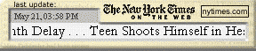
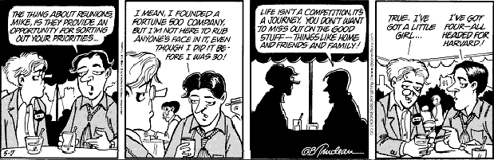

|
| ||
|
| ||
June 26, 1998
Contents
Introduction
Keep It Simple
Don't Rely on an Active Web Connection
Size matters
Make It Personal
For More Information
Summary
Active Desktop™ items, which you can create with Microsoft® Internet Explorer 4.0 and its Active Desktop interface, can be quite cool, especially when done well. What other technology enables you to deliver targeted content directly to an interested user's desktop, irrespective of whether they're online at that moment? Done right, a Desktop item presents a unique branding opportunity, and provides users one-click access to your Web site at all times. As such, Desktop items should not be taken lightly. We've prepared this short laundry list of thoughts on whether and how to implement them.
In our eyes, the best Desktop items are simple and elegant. They sit on the desktop quietly and peacefully. They don't try to do too much. A specialized search engine is a perfect example of this: it provides instant access to a unique database, and while waiting to be used, is a colorful reminder -- an icon linking to the site. While a funky Desktop item with many kinds of constantly updated functionality is wonderful in concept, it will be deposited in the circular file if it makes the desktop unstable.
To that end, limit the Desktop item's activity and complexity. If you're going to continuously update content, as is the case with stock and news tickers, limit the size of the update. The New York Times News Ticker, for example, simply updates headlines. For more information about a particular story, you click the headline and are sent to the story on the New York Times Web site.

Figure 1. New York Times News Ticker Desktop item
Perhaps a brief discussion of how a Desktop item works may help put this caution in context. Think of the Active Desktop as having two layers. The first layer is the familiar Windows® desktop that houses all the icons and shortcuts you store in your Desktop folder. The second layer holds all the Desktop items, and could be pictured as a single Web page. All the items on this desktop "page" are rendered by the same engine Internet Explorer 4.0 uses to parse and display Web pages (the MSHTML engine). Although MSHTML doesn't require all the resources that Internet Explorer does, it does require some.
Now picture a desktop with a bunch of Desktop items, each doing their own thing.
Although one instance of MSHTML handles all of them, it can activate additional resources (ActiveX® controls, Java containers, and other Internet Explorer controls such as the Tabular Data Control) if the Desktop items require them. If each Desktop item requires its own wee set of additional resources, the resources required to service all of them simultaneously can add up quickly. The net effect can be the same as visiting the clunky, feature-laden home page of an overly ambitious Web designer: although it's probably very pretty once everything is loaded, it rarely gets the chance to load completely. Frustrated visitors have already hit the Stop button and gone elsewhere.
Although a Desktop item is essentially a Web page, it will often be viewed (especially by people with dial-up access) without being connected to the Internet -- which means you should keep a couple of other things in mind. (The issues raised in this section are covered in much more detail in Creating Active Desktop Items.)
First, be careful about using Java applets and ActiveX controls. Make sure each subscription download includes all necessary images and data files. Wrap all the classes you use in JAR, ZIP, or CAB files. Second, make sure to supply messages or substitute HTML if an error occurs (you don't want to leave a blank gray box parked in the middle of the desktop).
Keep it small. The desktop is valuable real estate, and you will be competing with other uses for that space. Be polite. Take no more space than you need. There's no need for a search box that eats up a quarter of your desktop. The Epicurious Recipe Search Desktop item, for example, is a mere 300 x 80 pixels, yet contains solid branding, a description of the search capability, and even an example of how to construct a search.
Figure 2. Epicurious Recipe Search Desktop item
If possible, enable your subscribers to determine their own information feeds. If you're providing a stock-ticker Desktop item, for example, personalization is a must, because the number of public companies is overwhelming. But be careful not to give subscribers the ability to personalize too much data, because then you'll start bumping up against the constraints imposed by our first point on simplicity. Continuing with our stock-ticker example, limit the number of stocks or indexes it can display to, say, five (if someone has more stocks than that to track, they'll probably have access to real-time quotes).
The Comics Channel  Desktop item offers an excellent example of the range of material that can be customized. It's nicely linked with the channel of the same name. You simply select which comic you would like delivered to your desk each day -- and voila! -- Doonesbury greets me each day.
Desktop item offers an excellent example of the range of material that can be customized. It's nicely linked with the channel of the same name. You simply select which comic you would like delivered to your desk each day -- and voila! -- Doonesbury greets me each day.

Figure 4. The Comics Channel Desktop item (Doonesbury selected)
MSDN Online is the place to go for information on how to build and use Desktop items. Start with Creating Active Desktop Items and Michael Edwards' and Nancy Cluts' overview piece, The Active Desktop for Internet Explorer 4.0. Both are in the Content & Component Delivery section of MSDN Online.
For a general overview of DHTML features to consider, check out the Dynamic HTML section of the Web Workshop. Michael Wallent's DHTML Dude series in the Magazine offers a range of helpful tidbits on this large topic. And anyone interested in using the DirectAnimation™ controls (click to see the topics under DirectX® Media) that ship with Internet Explorer 4.0 can find the information on MSDN Online. George Young's two-part tutorial is a worthwhile read: CDF 101: Creating a Simple Channel and CDF 201: Beyond the Basics.
Yep. That's it. Four key points. Pretty simple. And that's how we want to keep it. If people subscribe to multiple Desktop items that are too active or complex, their Active Desktop will become less stable. And because the Active Desktop is an actual Windows shell, its performance will propagate throughout the system. In the worst case, users will disable Active Desktop entirely. The last thing we want is for a user to become disenchanted with what is really a pretty nifty technology.
Of course, we'd also love to hear any ideas or suggestions you might have. You're the people who have worked with Active Desktop, and probably developed your own programming guidelines as a result.
Meanwhile, we look forward to seeing your Desktop items (and your channels) in the Active Channel™ Guide!
Did you find this material useful? Gripes? Compliments? Suggestions for other articles? Write us!
© 1999 Microsoft Corporation. All rights reserved. Terms of use.